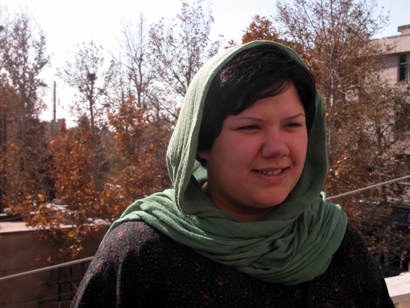

حکم دو سال و شش ماه زندان دلارام علی در دادگاه تجدید نظر تایید شد و به اجرای احکام سپرده شد. به جرم آنکه زندگی اش سند زنده ای بود بر خشونت افسار گسیخته نیروی انتظامی. به جرم انسانیتی که دارد و در کمتر آدمی میبینیم. به جرم تلاش صلح آمیزش برای به دست آوردن قوانین برابر برای زنان هم وطن اش.
زندگی بازی نیست
جنگ بین من و ماست
زندگی خالی نیست
سرشار از نباید ها, بایدهاست
آری راست میگویند
زندگی را غم, پایان نیست
آری غم ما فراوان است اما ما ساکت نخواهیم ماند. غم ما مشترک است و همبستگی مان زیاد. آخر میدانید ما نسل انقلابیم. نسلی هستیم که در جامعه ای بزرگ شدیم که انقلاب کرده و جنگیده, چندین سال از عمرش و جوانیش را در پی راهی نهاده که همه چیزش را در آن از دست داده. خانه هایش بمباران شد. دوستان و خانواده هایش کشته شدند. جامعه ای که در کوچه و بازار فریاد میزند که آرمان آزادی خواهی و عدالت هیچ فایده ای ندارد. هر چه داری را دو دستی بچسب که از دست ندهی.
چون ره از آغاز شب آغاز گشت
لاجرم راه ام همه در شب گذشت.( شاملو)
اما ما جز آرمان آزادی و برابریمان چیزی نداریم. اگر هم داشتیم, دیگر نداریم. تورم هر چه مادی بود را چون سیاه چاله ای به ورطه نابودی کشاند. و هر چه از حقوق اجتماعی و آزادی مدنی داشتیم را هم ازمان گرفتید, اما تلقین «هر چه داری را دو دستی بچسب» آنچنان در میان اکثریت جامعه نفوذ کرده که صدای اعتراض بر نیاورند. از ترس آنکه همان یک ذره ای که برایشان باقی گذاشتی را هم ازشان بگیری.
نه در خیابان احساس امنیت داریم نه در خانه و نه در دانشگاه و .... تنها آرمان آزادی و برابری برایمان مانده. اما غافل از آنی که به تعداد آنهایی که دیگر هیچ ندارند جز آرمانشان، روز به روز افزوده میشود. آری هر چه را داشتیم با هر ترفندی گرفتی ولیکن خود به خوبی میدانی که دستت به زوایای آزادیخواهی و برابری طلبی ذهنمان نمی رسد. اتفاقا همین تو را خشمگین کرده و تصور میکنی که زندان میتواند آن را خاموش کند.
. جز زندگی در دنیایی با صلح و آرامش و برابری چیزی نمیخواهیم
جلو بیا! می شنویم که مرد نیکی هستی
خودت را نفروخته ای, اما صاعقه هم
که به خانه میزند خریدنی نیست
به حرفت پایبندی, خوب حرفت چه بوده است؟
راستگو هستی عقیده ات این را میگوید.
کدام عقیده را؟
شجاعی؟ دشمنت کیست؟
خردمندی؟ برای که؟
چشم بر منافع خود ندوخته ای؟
پس در پی منافع که میروی؟
دوستی خوب هستی,
آیا با مردم خوب هم دوستی میکنی؟
اینک گوش کن
ما میدانیم
که دشمن مایی, به این علت میخواهیم نابودت کنیم
ولی به ملاحظه خدمتها
و صفتهای خوب تو
دیواری نیکو انتخاب کرده ایم که تو را بر آن وا داریم
و با تفنگا اعلا, رگباری از گلوله های خوب
نثارت میکنیم و دفنت میکنیم
با یک بیل خوب در خاکی مرغوب
برتولت برشت
برشت خوب نوشته. اما ما دشمن تو نیستیم. دشمن بی عدالتی و نابرابری ها هستیم. دشمن تبعیض و فساد. پس اگر ما را دشمن میبینی بدان که پایه های قدرتت بر اساس تبعیض گذاشته شده. و قدرت و تکبر و نخوت در حدی در تو حلول کرده که خود را با آن یکی میبینی. و احکامی این گونه مانند دو سال و نیم زندان برای دلارام علی که تمام زندگیش برای ایجاد آرامش برای کودکان در بم گذشت, آن زمان که تو در خانه ات نشسته بودی و پول کمکی به زلزله زده ها را میشمردی. برای برابری زنان مبارزه میکرد, آن زمان که تو خودکار و کاغذی در دست گرفته بودی و ننگی به نام لایحه حمایت از خانواده ( حمایت از مرد خانواده) را به مجلس میفرستادی تا تبعیض هر چه بیشتر شود و با اجرای این حکم ناعادلانه علیه دلارام، لابد انتظار داری که یاران و همفکران دلارام از وحشت زندان و داغ و درفش، در مقابل چنین لایحه خفت باری تمکین کنند. زهی خیال باطل.

دلارام و امثال او چارچوب خود سوزانده اند تا به دور از تعصبات کور کننده و پیش داوری های نظام غلط مردسالار, جهانی صلح آمیز و به دور از تبعیض بسازند. و ننگ این حکم همیشه باقی خواهد ماند زیرا سندیست بر بی عدالتی آن که ترازوی عدالت را در دست گرفته در دولتی که بزرگترین شعارش عدالت بود.
ما ساکت نخواهیم ماند زیرا دیگر هیچ نداریم از دست بدهیم جز آرمانمان.
چارچوبم را خود سوزاندم
خاکسترش
حاصلخیزی افکار من است
با دادن این حکم, به ما ثابت شد که آنها ما را چون گوسفند میخواهند. بدون کوچکترین نقد و اعتراضی. و ما دوشادوش دلارام فریاد میزنیم که
نمیخواهم چون گوسفند
بدوم در پی این گله و چوپانانش
یک سال پیش شاید حتا یک زندان دو روزه هم فاجعه ای بود در اذهان. اما به گونه ای خشونت را نهادینه کرده اند, با نام مهرورزی و عدالت که دیگر اگر فعال حقوق بشر یا دانشجویی و ... را یکی دو ماه هم ببرند زندان, میگوییم بالاخره آزاد میشود و انگار که عادی شده است, و آنها با حجوم بر هر قلمرو خصوصی و عمومی میخواهند که این گونه شویم. میخواهند عادی شود
نمیشود, نمیشود, نمیشود
صدای آوازی میشنویم:
ای زن ای حضور زندگی
به سر رسید ...
جهان دیگری ممکن است
این جنبش, سازنده آن است